Introduction
This is the fourth post in the series Elegant Data Visualization with ggplot2. In the previous post we learnt about geoms and how we can use them to build different plots. In this post, we will focus on the aesthetics i.e. color, shape, size, alpha, line type, line width etc. We can map these to variables or specify values for them. If we want to map the above to variables, we have to specify them within the aes() function. We will look at both methods in the following sections.
Color
In ggplot2, when we mention color or colour, it usually refers to the color of the geoms. The fill argument is used to specify the color of the shapes in certain cases. In this first section, we will see how we can specify the color for the different geoms we learnt in the previous post.
Point
For points, the color argument specifies the color of the point for certain shapes and border for others. The fill argument is used to specify the background for some shapes and will not work with other shapes. Let us look at an example:
ggplot(mtcars, aes(x = disp, y = mpg, color = factor(cyl))) +
geom_point()We can map the variable to color in the geom_point() function as well since it inherits the data from the ggplot() function.
ggplot(mtcars, aes(x = disp, y = mpg)) +
geom_point(aes(color = factor(cyl)))
If you do not want to map a variable to color, you can specify it separately using the color argument but in this case it should be outside the aes() function.
ggplot(mtcars, aes(x = disp, y = mpg)) +
geom_point(color = 'blue')
Now we will change the shape of the points to understand the difference between color and fill arguments. It can be again mapped to variables or values.
Let us map shape to variables.
ggplot(mtcars, aes(x = disp, y = mpg, shape = factor(cyl))) +
geom_point()
Map shape to variable in the geom_point() function.
ggplot(mtcars, aes(x = disp, y = mpg)) +
geom_point(aes(shape = factor(cyl)))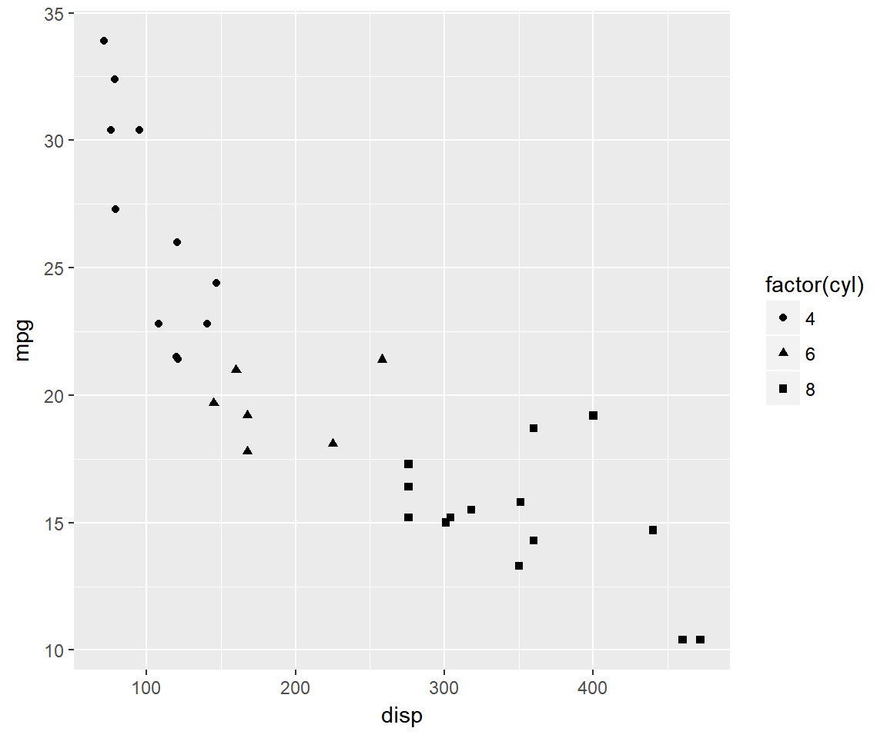
Specify value for shape.
ggplot(mtcars, aes(x = disp, y = mpg)) +
geom_point(shape = 5)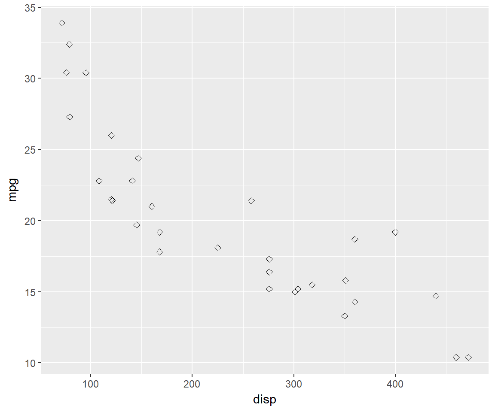
Use color to specify color of the point.
ggplot(mtcars, aes(x = disp, y = mpg)) +
geom_point(shape = 5, color = 'blue')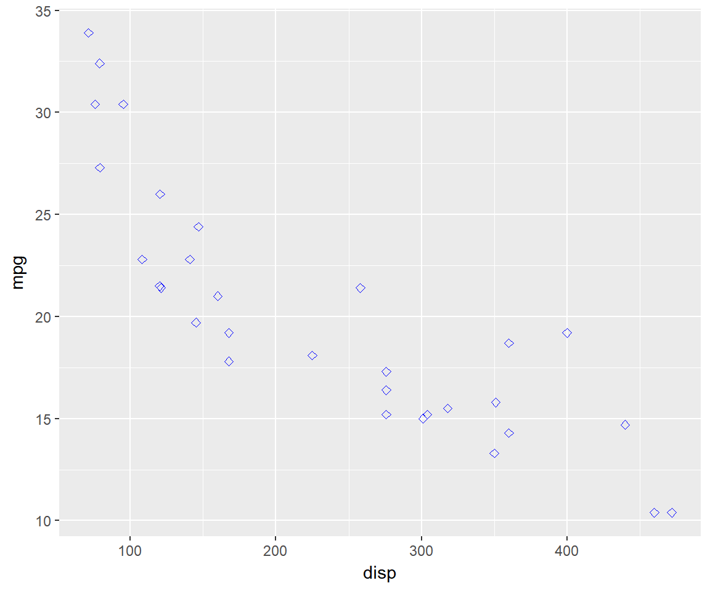
You cannot use fill with shape upto 21.
ggplot(mtcars, aes(x = disp, y = mpg)) +
geom_point(shape = 5, fill = 'blue')
fill will add background color in the below case.
ggplot(mtcars, aes(x = disp, y = mpg)) +
geom_point(shape = 22, fill = 'blue')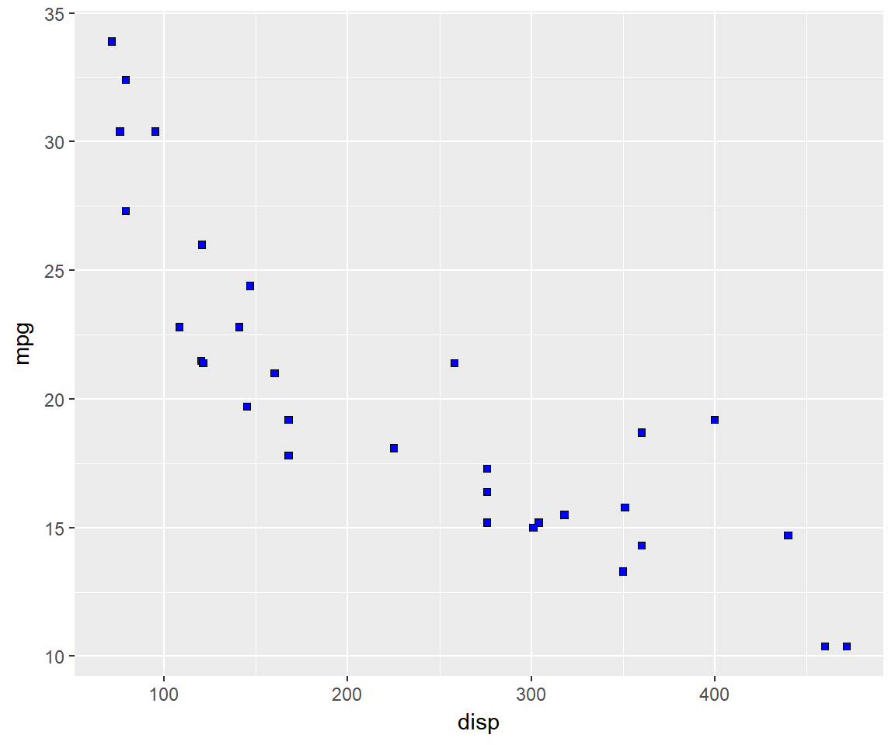
color will modify the border.
ggplot(mtcars, aes(x = disp, y = mpg)) +
geom_point(shape = 22, color = 'blue')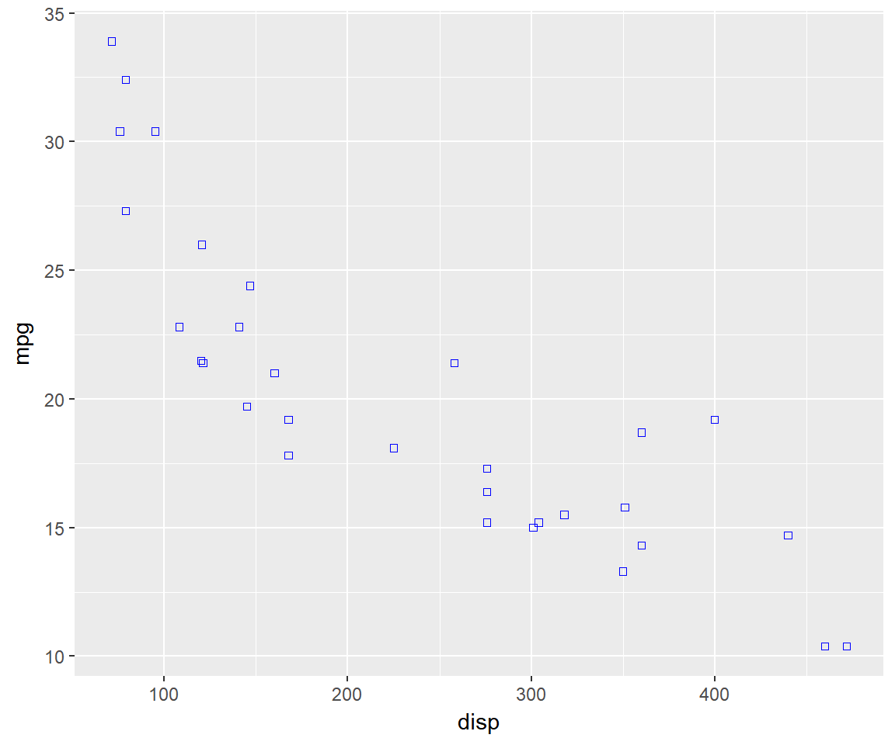
Let us map size of points to a variable. It is advised to map size only to continuous variables and not categorical variables.
ggplot(mtcars, aes(x = disp, y = mpg, size = disp)) +
geom_point()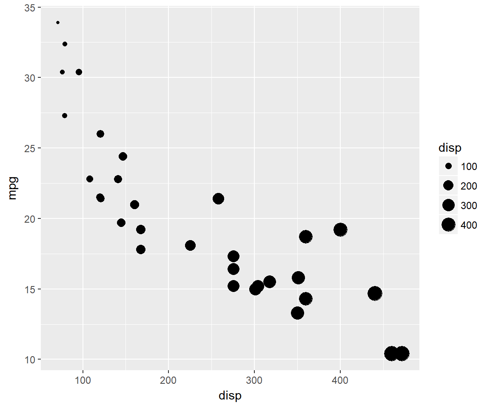
If you map size to categorical variables, ggplot2 will throw a warning.
Specify value for size.
ggplot(mtcars, aes(x = disp, y = mpg)) +
geom_point(size = 4)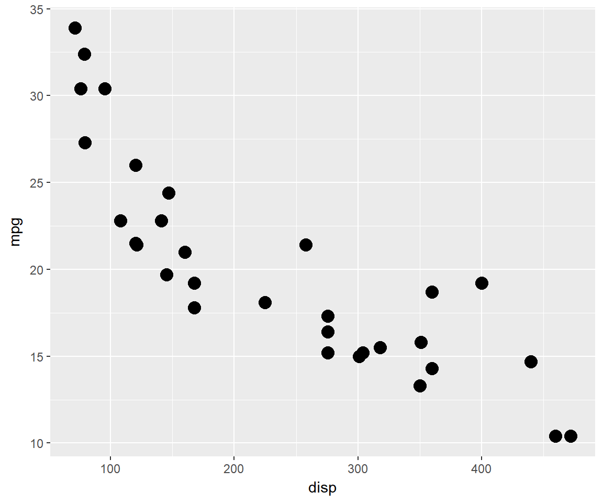
You can also specify the opacity of the color using the alpha argument.
ggplot(mtcars, aes(x = disp, y = mpg)) +
geom_point(aes(alpha = factor(cyl)), color = 'blue')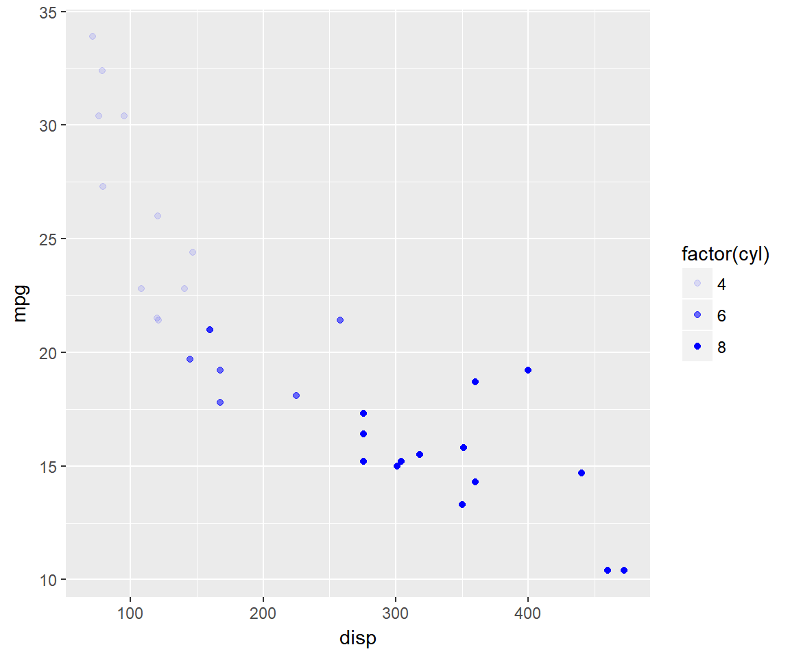
So far we have focussed on geom_point() to learn how to map aesthetics to variables. To explore line type and line width, we will use geom_line(). In the previous post, we used geom_line() to build line charts. Now we will modify the appearance of the line. In the section below, we will specify values for color, line type and width. In the next section, we will map the same to variables in the data. We will use a new data set. You can download it from here. It contains GDP (Gross Domestic Product) growth data for the BRICS (Brazil, Russia, India, China, South Africa) for the years 2000 to 2005.
## Warning: Missing column names filled in: 'X1' [1]ggplot(gdp, aes(year, india)) +
geom_line(color = 'blue')linetype can be used to modify the appearance of the line.
ggplot(gdp, aes(year, india)) +
geom_line(linetype = 2)ggplot(gdp, aes(year, india)) +
geom_line(linetype = 'dashed')
size argument is used to specify the width of the line.
ggplot(gdp, aes(year, india)) +
geom_line(size = 2)Now let us map the aesthetics to the variables. The data used in the above example cannot be used as we need a variable with country names. We will use gather() function from the tidyr package to reshape the data.
gdp2 <- gdp %>%
select(year, growth, india, china) %>%
gather(key = country, value = gdp, -year)Now we can map the aethetics to the country variable
ggplot(gdp2, aes(year, gdp, group = country)) +
geom_line()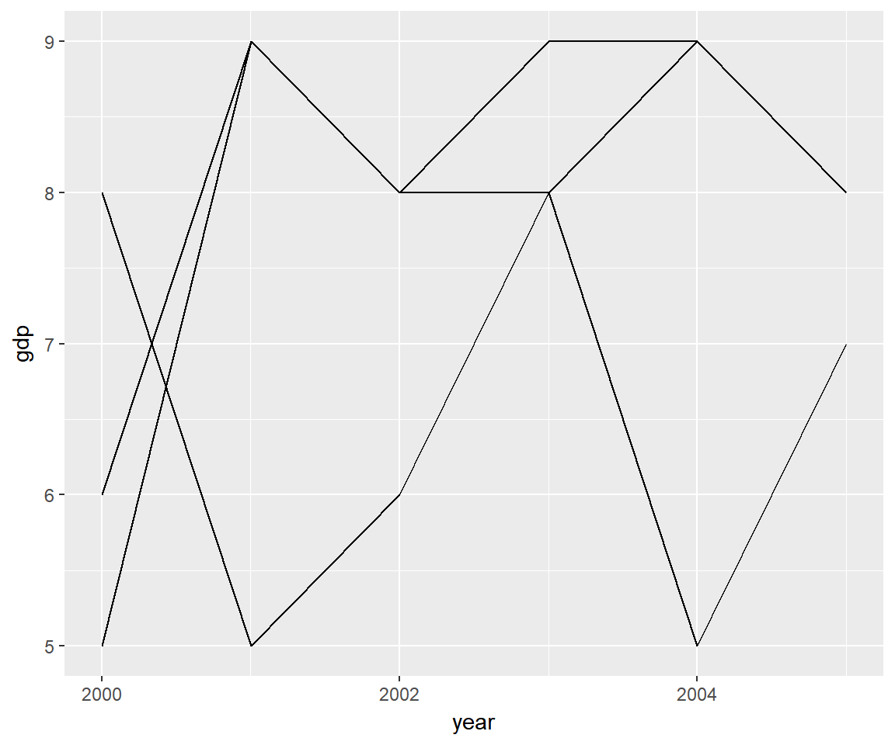
Let us begin with color.
ggplot(gdp2, aes(year, gdp, group = country)) +
geom_line(aes(color = country))Map linetype to country.
ggplot(gdp2, aes(year, gdp, group = country)) +
geom_line(aes(linetype = country))Map linewidth to country.
ggplot(gdp2, aes(year, gdp, group = country)) +
geom_line(aes(size = country))## Warning: Using size for a discrete variable is not advised.
Before we wrap up, let us quickly see how we can map aesthetics to variables for different plots.
Bar Plots
ggplot(ecom, aes(device, fill = purchase)) + geom_bar() ```
## Histogramsggplot(ecom) +
geom_histogram(aes(duration, fill = purchase), bins = 10)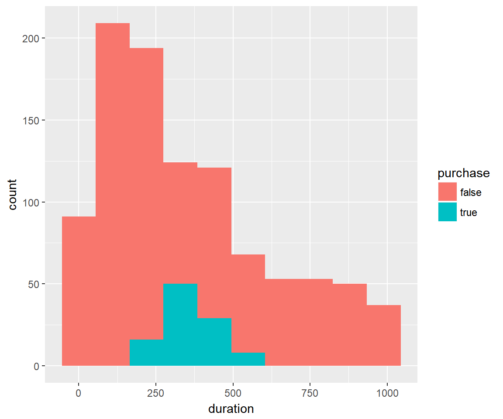
Box Plots
ggplot(ecom) +
geom_boxplot(aes(device, duration, fill = purchase))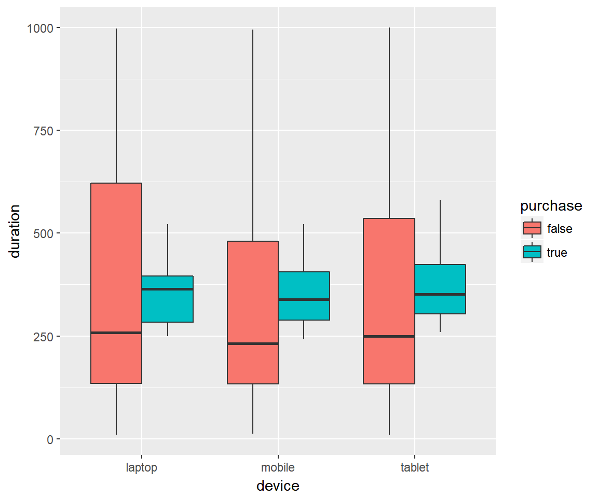
Summary
In the next post, we will focus on applying all that we have learnt so far to create scatter plots.